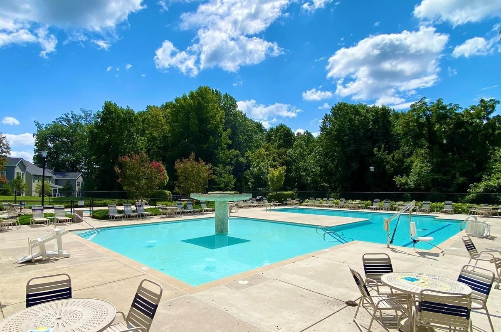

Pool
Wilson's Grove residents enjoy a community pool that provides entertainment for all ages. The pool is open from Memorial Day to Labor Day and is staffed with lifeguards at all times. Kids can enjoy a small kiddie pool or a massive 3 foot deep pool with a large fountain that provides hours of entertainment. Adults can enjoy 3 swimming lanes, as well as ample chairs, tables and umbrellas to relax in the sun. The pool house comes with bathrooms, showers, and a small indoor area with a TV and ice cream free to all homeowners.